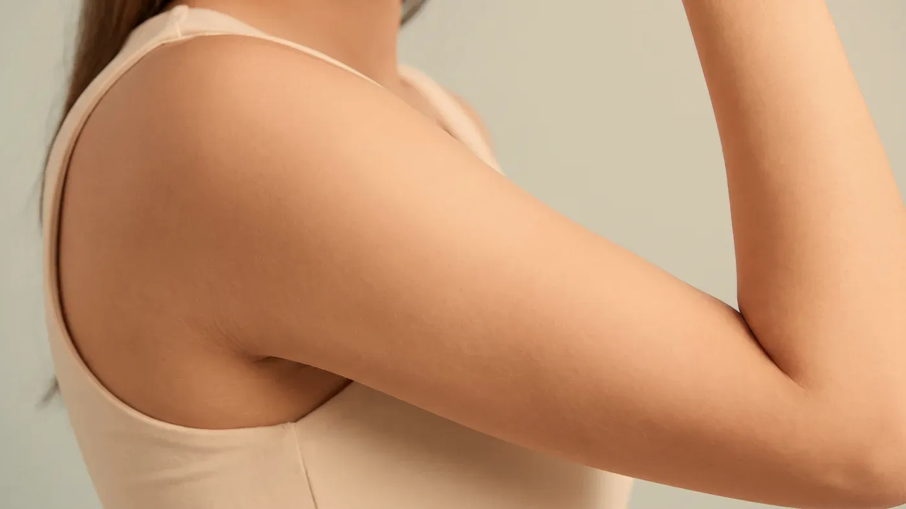
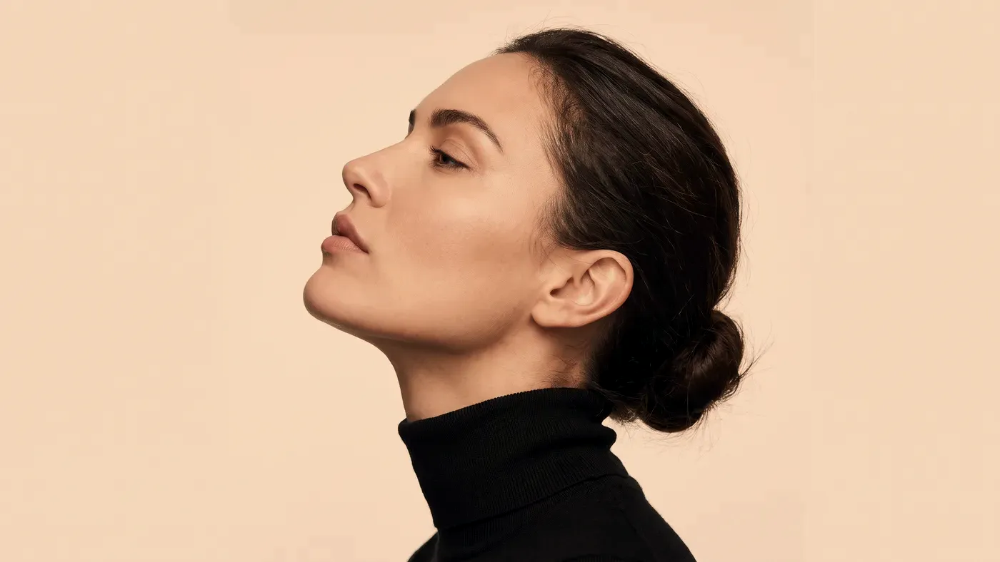

Bölgeler · Vücut
Vücutta plan bölgeye ve dokuya göre kurulur.
Karın, bel, kol ve bacakta en sık dile getirilen konular yerel yağ birikimi, selülit görünümü ve silinmek istenen dövmelerdir. Üçü farklı dokularda, farklı süreçlerle ortaya çıkar; aynı muayenede konuşulsalar da ayrı planlanırlar. Bu uygulamalar kilo vermenin yerine geçmez; amaç, belirli bir alandaki görünümde ölçülü bir değişim hedeflemektir.

Görsel yapay zekâ ile üretilmiştirKapsam
Vücut bölgesi neleri kapsar, plan neden bölgeye göre ayrılır?
Vücuda yönelik uygulamalarda karın, bel ve yan bel, üst kolun iç yüzü, uyluklar ve diz üstü değerlendirilir. Dövme silmede ise dövmenin bulunduğu yer ayrıca incelenir; mürekkebin rengi ve derinliği ile cildin yapısı planı belirler.
Bu bölgeler neden ayrı ele alınır?
Karın ve belde deri altı yağ tabakası kalındır; kolun iç yüzünde deri ince ve gevşemeye yatkındır; uyluklar ise selülit görünümünün en sık belirdiği bölgedir. Aynı uygulama her alanda aynı miktar, derinlik ve seans aralığıyla yapılmaz; iyileşme süresi ve giysi sürtünmesi de bölgeden bölgeye değişir.
Nerede duruyoruz?
Bu uygulamaların hepsi cerrahi olmayan yöntemlerdir. Belirgin deri fazlalığı, karın duvarında gevşeme ya da geniş hacimli yağ birikimi gibi tablolarda beklenen değişimi sağlayamazlar; cerrahi yağ alma ya da karın germe gibi işlemler muayenehanenin kapsamı dışındadır.
Böyle bir tablo görülürse bunu ilk görüşmede açıkça söyler, ilgili cerrahi uzmanlık dalına yönlendirme yaparız. Bu sınırı neden koyduğumuzu neden bazı işlemleri yapmıyoruz sayfasında açıkladık.
Bölge atlası
Vücut için en çok hangi isteklerle geliniyor?
Vücut bölgelerinde gelen isteklerin büyük bölümü üç başlıkta toplanır; her biri farklı bir dokuya ve farklı bir sürece dayanır.
 Görsel yapay zekâ ile üretilmiştir
Görsel yapay zekâ ile üretilmiştir
Bölgesel yağlanma
Karın altında, belin iki yanında, üst kolun iç yüzünde ya da uylukların iç tarafında, diyet ve egzersize karşın azalmayan yerel yağ birikimleridir. Genetik yatkınlık ve hormonlar bu birikimin yerini belirler. Genel kilo fazlası varsa önce o ele alınır; yerel uygulamalar bu tabloda anlamlı bir fark yaratmaz.
Selülit görünümü
Deri altındaki yağ bölmelerinin bağ dokusu bantları arasından yüzeye doğru itilmesiyle oluşan, portakal kabuğunu andıran dalgalı bir görünümdür. En sık uyluklarda görülür ve kilolu olmayan kişilerde de bulunabilir.
Dolaşım, bağ dokusunun esnekliği ve hormonal etkenler tabloyu değiştirir. Bu nedenle tek bir yöntemle değil, mezoterapi, lipoliz ve cihaz uygulamalarının birlikte düşünüldüğü bir planla ele alınır; tümüyle kaybolması beklenmez.
Dövme ve istenmeyen renk
Vücudun herhangi bir yerindeki dövme, pikosaniye lazerin çok kısa atımlarıyla mürekkep parçacıklarını küçültmek amacıyla seanslara bölünerek ele alınır. Seans sayısı mürekkebin rengine, derinliğine, dövmenin yaşına ve cilt tipine göre değişir; görünümün seanslar içinde açılması hedeflenir.
Uygulamalar
Vücut için hangi seçenekler konuşulabilir?
Aşağıdaki seçenekler muayenenin sonucuna göre ve ilgili bölgeye uyarlanarak değerlendirilir. Vücutta işlem yapılan alan yüzden çok daha geniştir; seans sayısı, aralıklar ve iyileşme süresi de buna göre değişir.
Bölgesel lipoliz
YEREL YAĞBirkaç gün şişlik→Selülit görünümü
CİLT YÜZEYİMuayenede belirlenir→Pico lazer ile dövme silme
ENERJİBirkaç gün–1 hafta→Mezoterapi
CİLT KALİTESİBirkaç saat–1 gün→Altın iğne radyofrekans
ENERJİ2–3 gün kızarıklık→Fraksiyonel lazer
ENERJİMuayenede belirlenir→Biyostimülan uygulamalar
DOKU DESTEĞİMuayenede belirlenir→Pico lazer ile leke
ENERJİMuayenede belirlenir→
Bölgesel lipoliz
Karın, bel, kol iç yüzü ve uylukta diyete dirençli yerel yağ birikiminde değerlendirilir. Kilo verme yöntemi değildir; genel kilo fazlası olanlarda planlanmaz.
Sayfasına git →Süreç
Vücut için plan hangi adımlarla ilerler?
İlk görüşmede işlem yapılacağını varsaymayın. İlk adım, isteğinizin cerrahi olmayan bir yöntemle karşılanıp karşılanamayacağını netleştirmektir.
- Beklenti ve uygunluk: hangi bölgede ne tür bir değişim istediğiniz konuşulur; beklenti cerrahi bir sonuca denk düşüyorsa uygulama önerilmez, yönlendirme yapılır.
- Muayene ve neden araştırması: yağ dağılımı, deri esnekliği ve selülitin derecesi değerlendirilir; hızlı kilo alımı, hormonal düzensizlik ya da tiroid kuşkusu varsa önce bunlar araştırılır, gerekirse tahlil istenir.
- Deneme alanı ve ayar: lazerle yapılan işlemlerde önce küçük bir alanda deneme atışı yapılır; cildin yanıtı görülmeden bütün alana geçilmez.
- Seans serisi ve kontrol: seans aralıklarını bölge ve yöntem belirler; her yeni seanstan önce bölgeyi yeniden muayene ederiz. Kontrollerde nelere bakıldığını uygulama sonrası takip sayfasında bulabilirsiniz.
“Bölgesel bir uygulamayı kilo vermenin yerine koymayız; beklenen değişim ölçülü değilse işleme başlamayız.”
- Gebelik ve emzirme: bu dönemlerde girişimsel işlem yapılmaz.
- Genel kilo fazlası ve kilo verme beklentisi: yerel yağ uygulamaları bu amaçla planlanmaz; önce genel değerlendirme gerekir.
- Bölgede aktif enfeksiyon: açık yara, kıl kökü iltihabı ya da mantar kuşkusunda bölge yatışana kadar beklenir.
- Yeni bronzlaşmış ya da güneşte yanmış deri: lazer uygulamalarında çoğunlukla en az dört hafta beklenir; solaryum ve bronzlaştırıcı ürünler de buna dâhildir.
- Kalın iz (keloid) eğilimi: özellikle dövme silmede yöntem ve ayar seçimi daralır.
- Yeni yapılmış ya da iyileşmemiş dövme: dövme bölgesi bütünüyle iyileşene kadar beklenir; kabuklu ya da kızarık bir alana lazer uygulanmaz.
- Işığa duyarlılık yaratan ilaçlar: bazı antibiyotikler ve sivilce ilaçları lazer işlemlerinin ertelenmesini gerektirir.
- Kontrol altında olmayan diyabet, karaciğer ya da böbrek hastalığı, kanama eğilimi ve bilinen aşırı duyarlılıklar: düzenli kullandığınız ilaçları ve daha önce yaşadığınız tepkileri muayenede mutlaka anlatın.
Muayenehanede yalnızca hekimin uzmanlığı ve Sağlık Bakanlığı onaylı sertifikası kapsamındaki işlemler yapılır. Cerrahi yağ alma, karın germe ve deri fazlalığının alınması bu kapsamda yer almaz; bu isteklerde yönlendirme yapılır.
Sonrası
İşlemden sonraki günler nasıl geçer?
İlk günler
İşlem sonrası önerilerin çoğu, bölgeyi sürtünmeden, sıcaktan ve terden korumaya yöneliktir. İşlemden sonraki iki gün sauna, hamam, havuz, deniz ve ağır spor bekleyebilir. Lipolizden sonra bölgede birkaç gün sürebilen şişlik, hassasiyet ve morarma olabilir; bu dönemde bölgeyi sıkan dar giysilerden kaçınmak rahatlatır.
Dövme silmeden sonra işlem yapılan alanda kızarıklık, hafif şişlik, kabuklanma ve kimi zaman su kabarcıkları görülebilir; kabukları koparmamanız ve bölgeyi verilen talimata göre temiz tutmanız istenir. İyileşme süresince alanı doğrudan güneşten korumanız gerekir. Randevudan önce bilmeniz gerekenleri hazırlık listesi sayfasında topladık.
Gerçekçi beklenti
Vücutta değişim, yüze kıyasla daha geç ve daha sınırlı görünür. Yerel yağ uygulamalarında tartıdaki değerin değişmesi beklenmez; hedeflenen, belirli bir alandaki çevre ve hattın hafiflemesidir. Selülit görünümü tümüyle kaybolmaz; yüzeydeki dalgalanmanın azalması hedeflenir ve etkinin sürmesi yaşam alışkanlıklarına bağlıdır.
Dövme silmede seans sayısı önceden söylenemez; bazı renkler ve yoğun işlenmiş mürekkepler daha dirençlidir, görünüm seanslar içinde açılır ve kimi zaman hafif bir iz ya da renk farkı kalabilir. Belirgin deri fazlalığında cerrahi olmayan yöntemlerin sınırı biter. Yaklaşımımızın çerçevesi nasıl çalışıyoruz sayfasında.
Soru–cevap
Aklınızdaki soruyu seçin, yanıtı yanda okuyun
Sonraki adım
Vücut planınızı muayenede netleştirelim
İsteğinizin cerrahi olmayan bir yöntemle karşılanıp karşılanamayacağını ilk görüşmede açıkça konuşuyoruz. Değerlendirme için Bakırköy muayenehanemizden randevu talep edebilirsiniz.
Bu içerik Uzm. Dr. Rahmi Cebeci (Aile Hekimliği Uzmanı · Medikal Estetik Sertifikalı) tarafından hazırlanmış ve tıbbi doğruluk yönünden denetlenmiştir.
Bu sayfadaki bilgiler genel bilgilendirme amaçlıdır; tanı veya tedavi önerisi niteliği taşımaz ve hekim muayenesinin yerine geçmez. Sonuçlar kişiden kişiye değişiklik gösterebilir.